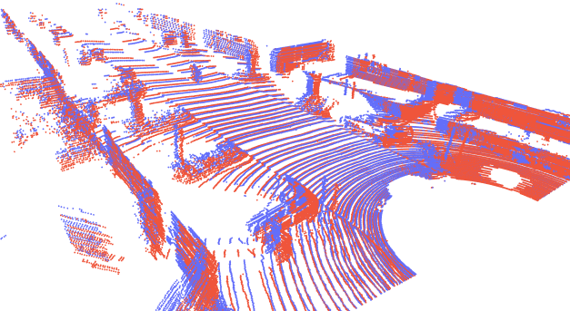
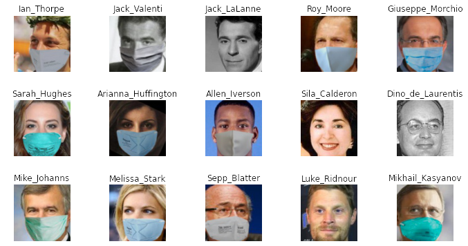
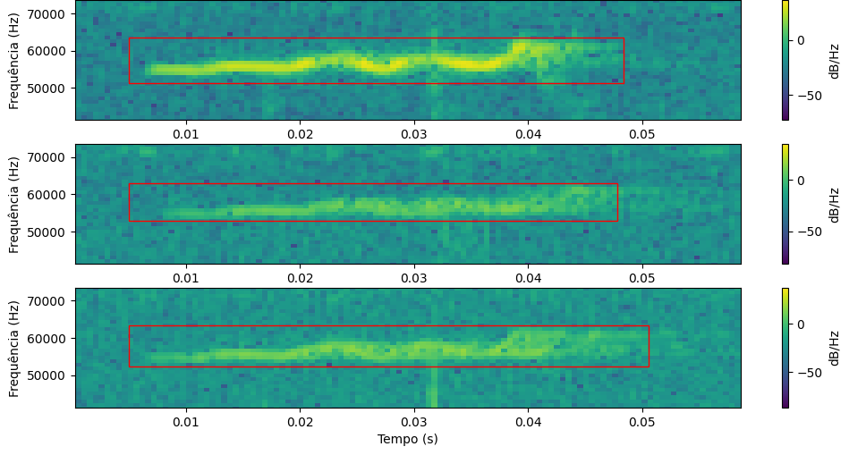

Software Development • Computer Vision • Machine Learning • Systems Architecture • Science
This section includes a variety of projects I've made in my carrer. Some projects focus more on solutions to real problems (especially in agriculture science), while others are primarily intended as a learning experience.

Adaptative 3D Point Clouds
Implementing the Iterative Closest-Points Algorithm for LiDAR Scans.
5 min read

Reconhecimento facial em tempos de pandemia
Reconhecimento e extração de características faciais no contexto de pandemia utilizando técnicas de Metric Learning no Tensorflow.
4 min read

Sound Localization via Intersecting Manifolds
Refinando a Precisão da Localização Sonora em Interpretações de Comportamento Social em Camundongos.
6 min read